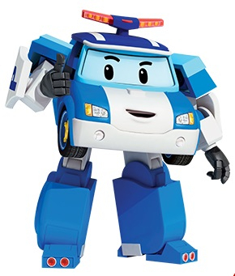

- 뽀로로
- 타요
- 둘리
- 폴리

《대한민국의 텔레비전 애니메이션. 지도자격인 경찰차 폴리, 힘센 소방차 로이, 영리한 구급차 엠버, 재빠른 헬리콥터 헬리가 한 팀을 이룬 구조대 이야기다. 3D 그래픽과 간결하지만 어린이에게 어필할 수 있는 스토리를 갖추어 아이들의 눈길을 사로잡았다.
단순한 스토리우정, 협동심, 이타심, 안전 등을 강조하는 교육용 애니메이션으로도 부모님들로부터도 사랑을 받아 뽀롱뽀롱 뽀로로와 방귀대장 뿡뿡이를 이을 한국 애니메이션계의 기대주이자 아이들의 우상이며, 현재는 꼬마버스 타요, 두리둥실 뭉게공항과도 어깨를 겨루는 한국 교통 전문 애니메이션의 대표주자이다.
최강전사 미니특공대
와도 비견되는 히어로 애니메이션이기도 하다. 무엇보다도 폭력적인 것을 배제하는 것을 강점으로 내세우고 있으며, 실제로 모든 에피소드 중 악당이 등장한 것은 딱 3개뿐이다.
무엇보다도 폭력적인 것을 배제하는 것을 강점으로 내세우고 있으며, 실제로 모든 에피소드 중 악당이 등장한 것은 딱 3개뿐이다.
완구 역시 폭력적인 물건(장난감 칼, 총 등)에는 캐릭터 라이선스를 제공하지 않는다는 방침이다.
2014년 2월 26일부터 2014년 5월 22일까지 EBS에서 시즌 3가, 2015년 8월 31일부터 2015년 11월 24일까지 시즌 4가 방영되었다.
2017년 8월에는 로이를 주연으로 하는 두 번째 스핀오프작인 '로이와 함께하는 소방안전 이야기'가, 2018년 8월에는 엠버를 주연으로 하는 세 번째 스핀오프작인 '엠버와 함께하는 생활안전 이야기'가, 2020년 7월에는 뮤지컬 애니메이션 '로보카폴리 쏭쏭뮤지엄'이 방영되었다.
2021년 7월에 제2차 EBS 애니메이션 공모에서 5년 8개월만에 드디어 시즌 5가 선정되어 무려 6년 4개월만에 새로운 시즌이 나왔다. 그러나 다른 시즌과 달리 16부작으로 편성되며 이 때문에 나머지 절반 분량들은 이전 시즌의 에피소드들을 재방송한다. 2022년 3월 4일부터 방영을 시작했으며, 2022년 12월 13일을 마지막으로 시즌 5가 종영되었다. 현재 시즌 6는 계획하지 않고 있다고 한다.